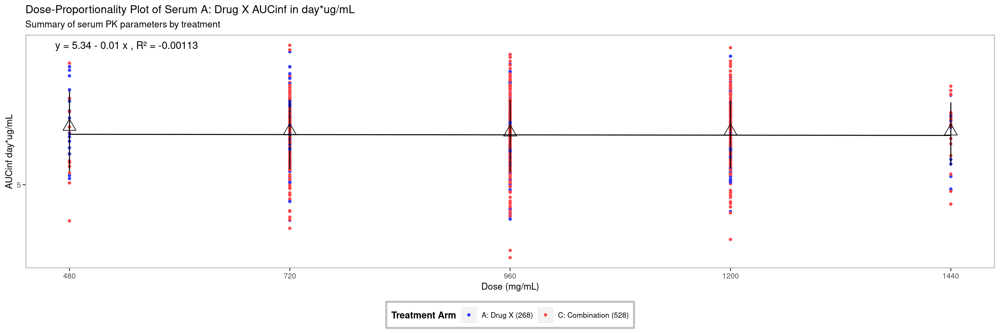

library(tern)library(scda)library(dplyr)library(ggplot2)library(nestcolor)# need adex for dose info and adpp for AUC max infoadex <-synthetic_cdisc_dataset("latest", "adex")adpp <-synthetic_cdisc_dataset("latest", "adpp")adpp_a <- adpp %>%filter( PPSPEC =="Plasma", AVISITN =="1", PARAMCD =="AUCIFO" ) %>%mutate(AUCinf = AVAL)adex_a <- adex %>%filter( AVISITN =="1", PARAMCD =="DOSE" ) %>%mutate(Dose = AVAL) %>%select(USUBJID, Dose)# join the dose information to the adpp tableadpp_adex <-left_join(adpp_a, adex_a, by ="USUBJID") %>%group_by(`ARM`) %>%mutate(count =paste0(`ARM`, " (", n(), ")"))# set x and y variable namesx_var <-"Dose"y_var <-"AUCinf"
Code
# calculate Summary Statistics (mean and sd) for each groupSummaryStat <- adpp_adex %>%group_by(Dose =as.factor(Dose)) %>%summarise(AUCsd =sd(AUCinf), meanAUC =mean(AUCinf))SummaryStat$Dose <-as.numeric(as.character(SummaryStat$Dose))# generate linear modelmod1 <-lm(log(AUCinf) ~log(Dose), adpp_adex)# obtain linear model coefficient valuescf <-round(coef(mod1), 2)# generate linear model equationeq <-paste0("y = ", cf[1],ifelse(sign(cf[2]) ==1, " + ", " - "), abs(cf[2]), " x , ","R²"," = ",signif(summary(mod1)$adj.r.squared, 3))plot <-ggplot(adpp_adex, aes(x = .data[[x_var]], y = .data[[y_var]])) +annotate(geom ="text", x =min(adpp_adex[[x_var]]), y =max(adpp_adex[[y_var]]), label = eq, hjust =0.1) +geom_point(size =1, aes(color =factor(`count`))) +scale_x_continuous(name ="Dose (mg/mL)",breaks =unique(adpp_adex$Dose) ) +scale_y_continuous(name =paste(y_var, adpp_a$AVALU),trans ="log",breaks =exp(ceiling(seq(from =min(log(adpp_adex$AUCinf)), to =max(log(adpp_adex$AUCinf)),by =1 ))),labels =as.character(ceiling(seq(from =min(log(adpp_adex$AUCinf)),to =max(log(adpp_adex$AUCinf)), by =1 ))) ) +geom_smooth(method ="lm", formula = y ~ x, se = F, color ="black", linewidth =0.5) +# Display error bars for each dosing group (this will only appear if the sd is less than the mean)geom_errorbar(data = SummaryStat, aes(x =`Dose`, y =`meanAUC`, ymin =`meanAUC`-`AUCsd`, ymax =`meanAUC`+ AUCsd), width = .05,position =position_dodge(.1) ) +geom_point(data = SummaryStat, aes(x = Dose, y = meanAUC, size =1), shape =2, show.legend =FALSE) +ggtitle(paste("Dose-Proportionality Plot of Serum", as.character(unique(adex$TRT01P)), y_var, "in", adpp_a$AVALU ), subtitle ="Summary of serum PK parameters by treatment") +labs(color ="Treatment Arm") +theme_nest()plot

Code
# calculate median for each group if preferredSummaryStat <- adpp_adex %>%group_by(Dose =as.factor(Dose)) %>%summarise(medAUC =median(AUCinf))SummaryStat$Dose <-as.numeric(as.character(SummaryStat$Dose))plot <-ggplot(adpp_adex, aes(x = .data[[x_var]], y = .data[[y_var]])) +annotate(geom ="text", x =min(adpp_adex[[x_var]]), y =max(adpp_adex[[y_var]]), label = eq, hjust =0.1) +geom_point(size =1, aes(color =factor(`count`))) +geom_smooth(method ="lm", formula = y ~ x, se = F, color ="black", linewidth =0.5) +geom_point(data = SummaryStat, aes(x = Dose, y = medAUC, size =1), shape =2, show.legend =FALSE) +ggtitle(paste("Dose-Proportionality Plot of Serum", as.character(unique(adex$TRT01P)), y_var, "in", adpp_a$AVALU), subtitle ="Summary of serum PK parameters by treatment") +labs(color ="Treatment Arm") +scale_y_continuous(name =paste(y_var, adpp_a$AVALU),trans ="log",breaks =exp(ceiling(seq(from =min(log(adpp_adex$AUCinf)), to =max(log(adpp_adex$AUCinf)), by =1))),labels =as.character(ceiling(seq(from =min(log(adpp_adex$AUCinf)), to =max(log(adpp_adex$AUCinf)), by =1))) ) +scale_x_continuous(name ="Dose (mg/mL)",breaks =unique(adpp_adex$Dose) ) +theme_nest()plot